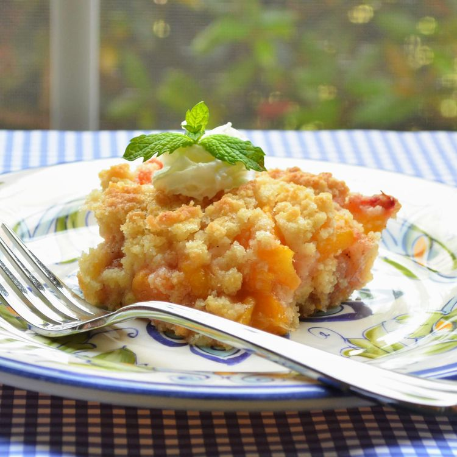

Homemade Peach Crumb Bars

Description
This homemade peach crumb bars recipe is always a hit. Wait until summer for fresh peaches, or use frozen to get that wonderful peach flavor any time of the year.
Ingredients
Crumble
- cooking spray
- 1 ½ cups all-purpose flour
- ½ cup white sugar
- ½ teaspoon baking powder
- 1 pinch salt
- 10 tablespoons unsalted butter, cold, cut into cubes
- 1 large egg yolk
- 1 tablespoon cold water
Filling
- 2 cups sliced fresh peaches, or more to taste
- ½ cup white sugar
- 2 tablespoons all-purpose flour
- 1 tablespoon fresh lemon juice
- 1 teaspoon vanilla extract
- ¼ teaspoon ground cinnamon
- ¼ teaspoon ground nutmeg
Steps
- Preheat the oven to 375 degrees F (190 degrees C). Coat an 8-inch square baking pan with cooking spray.
- Whisk 1 ½ cups flour, ½ cup sugar, baking powder, and salt together in a large bowl; cut in cold butter using 2 forks or a pastry cutter until mixture resembles coarse crumbs. Slowly mix in egg yolk and cold water; dough should be very crumbly. Press ½ crumble mixture into the prepared pan; reserve remaining ½ crumble mixture.
- Combine peach slices, ½ cup sugar, 2 tablespoons flour, lemon juice, vanilla, cinnamon, and nutmeg in a separate bowl; spread over crust and top with reserved crumble mixture.
- Bake in the preheated oven until golden brown and set, 30 to 38 minutes. Cool to room temperature, then cut into 12 bars.
Home